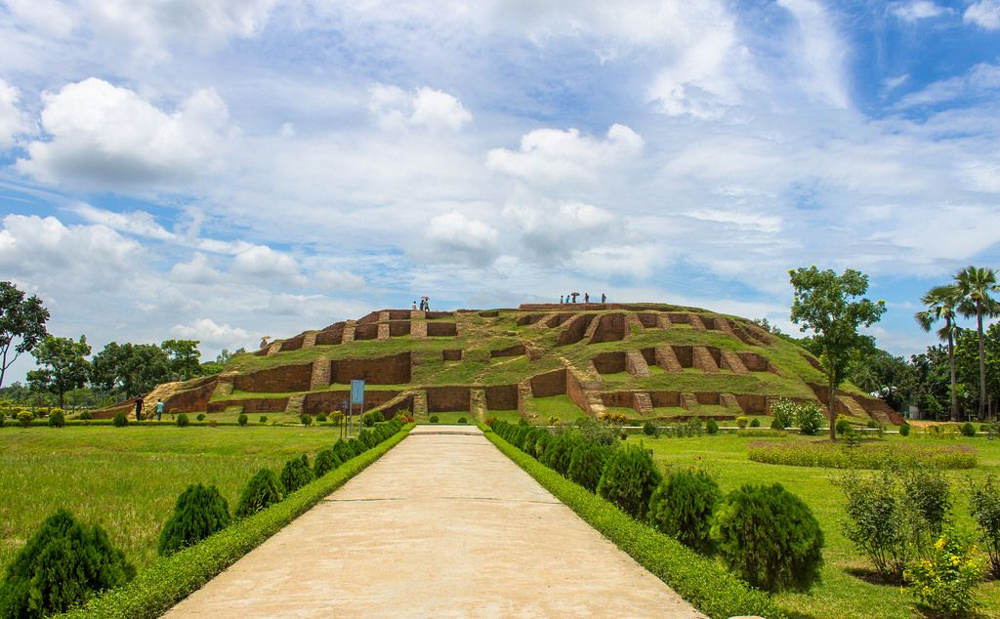
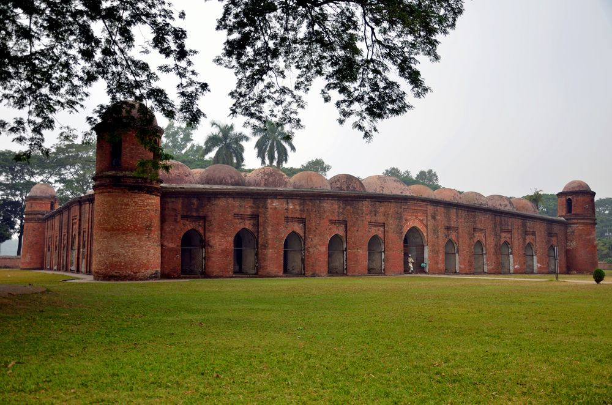

Historic Sites

Lalbagh Fort
Location: Dhaka
Era: Mughal Period

Paharpur
Location: Naogaon
Era: Pala Empire

Mahasthangarh
Location: Bogura
Era: Ancient Bengal

Shat Gombuj Mosque
Location: Bagerhat
Era: Sultanate Period